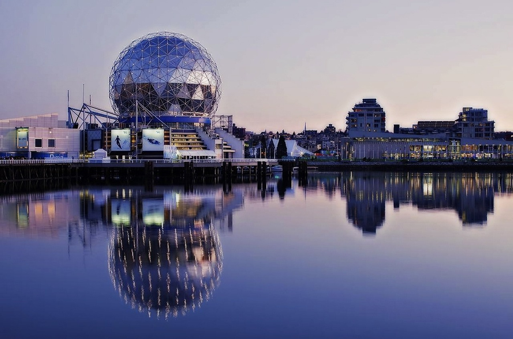

Welcome to Vancouver
Entering the coast
Along the western coast of British Columbia, Vancouver's coastal getaway. It
The invitation goes out to all within our city to join in on thrilling adventures to getaway, to
escape within the coastal getaway of Vancouver.
By offering a wide range of experiences, Vancouver showcases its breathtaking scenery and
adventurous spirit.
activities. Seeking peaceful strolls through historical landmarks within the coast, trekking might
appeal to novices to getaway.
Find solace they do, whether a devoted follower of divinity food, an ardent fan of rainforests, or a
traveler searching for somewhere novel.
An assortment of marvels awaits those visiting the Vancouver coastal hideaway. With
With beautiful coastlines, landscapes, forests, and mountains offer an ideal combination of natural
splendor.
Where hiking boots must be worn before becoming lost amongst its impressive outdoor attractions to
getaway from the big city to discover panoramic views. Unexplored horizons and untamed natural
beauty await for
those who embark upon ventures across the Pacific Ocean;
this coastal paradise.

Tourist Getaway
Come explore captivating destinations await those willing to explore Vancouver's diverse
cultural tapestry. Venerable sanctuaries of learning and artifactual treasures, these
acclaimed museums welcome visitors on an absorbing quest through the complex mosaic of
Vancouver's storied cultural identity. Upon entering those revered halls, an adventure
unfolds; diving deep into the city coastal's rich past, marveling at its thriving artistic
heritage,
and garnering comprehensive understanding of its varied ethnic composition. Over centuries,
Vancouver's museums serve as a living example of the coastal city's growth and development,
thanks
to those who contributed to it. Unwinding the coastal city of Vancouver requires
examining each institution through the lens of time.
Vancouver's Amazing Cusine Choices
Vancouver, it effortlessly dangles a tempting selection of food spots catering to every
single palette. Come on and venture with us in
In this article, we take off on a mouthwatering journey through Vancouver's rich and varied
culinary landscape.
Feast your senses on this spread that includes a mix of various Asian tastes combined in an
unorthodox style. Also available are pleasing seafood dishes, and a vast multitude of unique
gastronomical adventures. These include food vans, in addition to beachside family.
Vancouver showcases a myriad of eating options, ranging from humble street food stalls all
the way up to posh dining establishments. In short, you're bound to find just about any
cuisine your palate might crave in this culinary hotspot.
Hiking Spots
With hiking, Vancouver showcases an unparalleled combination of natural splendor and urban
convenience within the city or in the coastal view outside of the city. Between the ocean and
mountains lies this city, granting access to multiple hiking
paths for every type of outdoorsperson to getaway. From relaxed meanders through picturesque urban
green
spaces. At popular hiking spots like Grouse Mountain, Cypress Provincial Park, and Lynn Canyon Park,
one can marvel at the stunning views of the city skyline, untouched forests, tumbling waterfalls,
and glassy lakes. Showcasing Pacific Northwest's ecological marvels within walking distance of
bustling urban Vancouver is a true hiker's haven known as Vancouver.